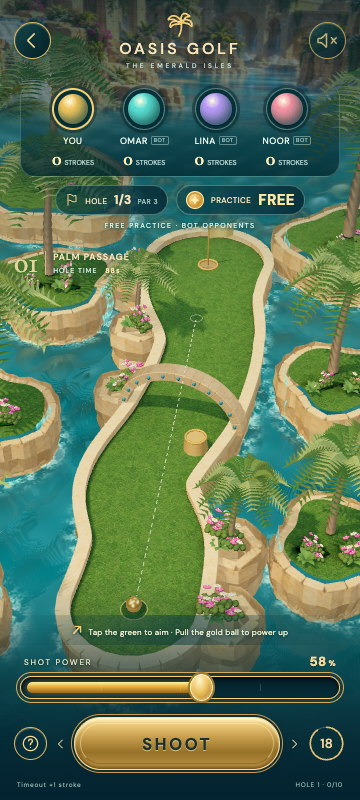
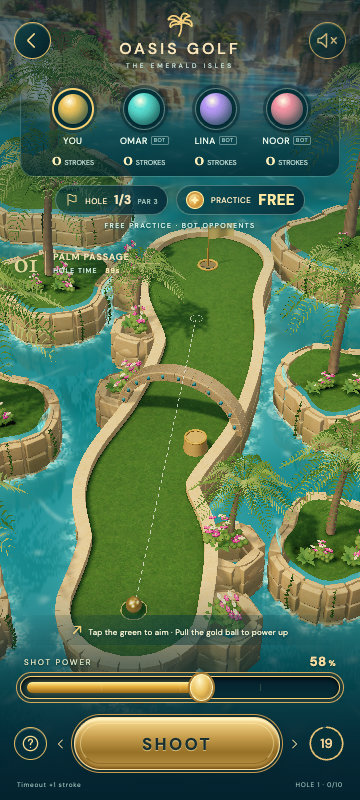
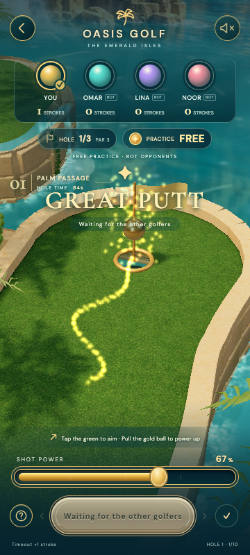
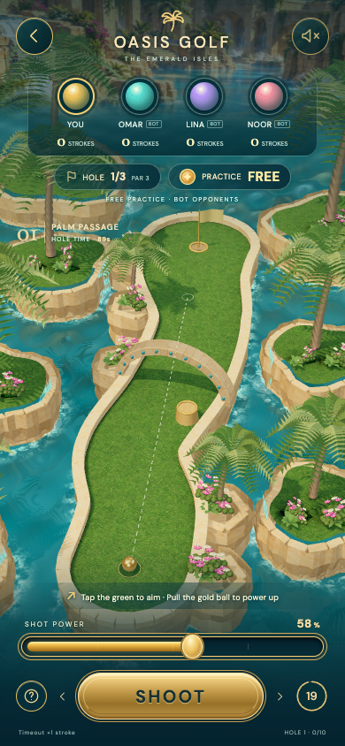
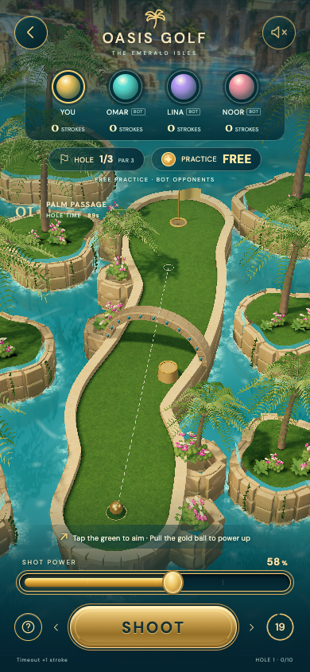
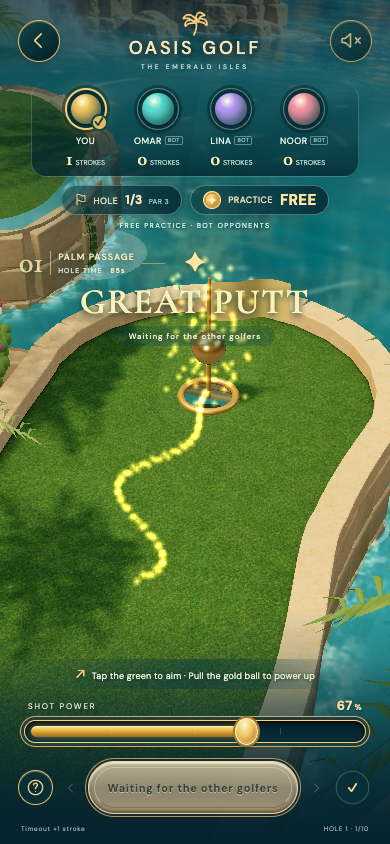
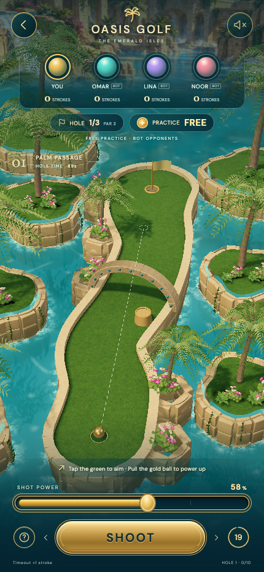
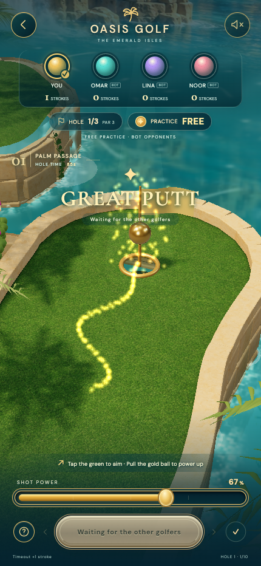

Oasis Golf · 石岸、植物、水面与光照对比
独立本地审图，无钱包。原始截图保持原样；三个视口均实际点击力度条和击球，一杆入洞。不是实体手机或 100% 原稿还原验收。
360 px · 同人数、同机位

修改前
修改后
实际一杆入洞390 px · 同人数、同机位

修改前
修改后
实际一杆入洞430 px · 同人数、同机位
修改前
修改后
实际一杆入洞 390 px 实际击球至入洞录屏
录像无音轨。模型和碰撞独立，权威关卡/物理/得分未改。完整报告：本轮报告。